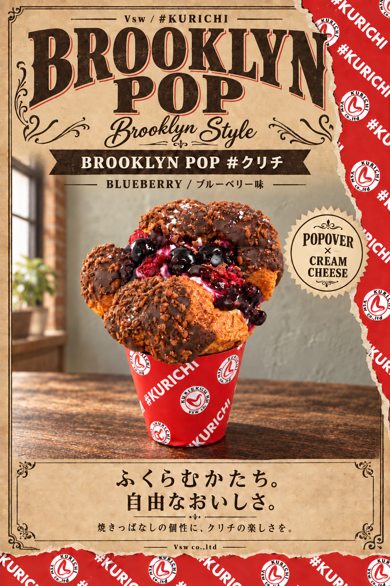
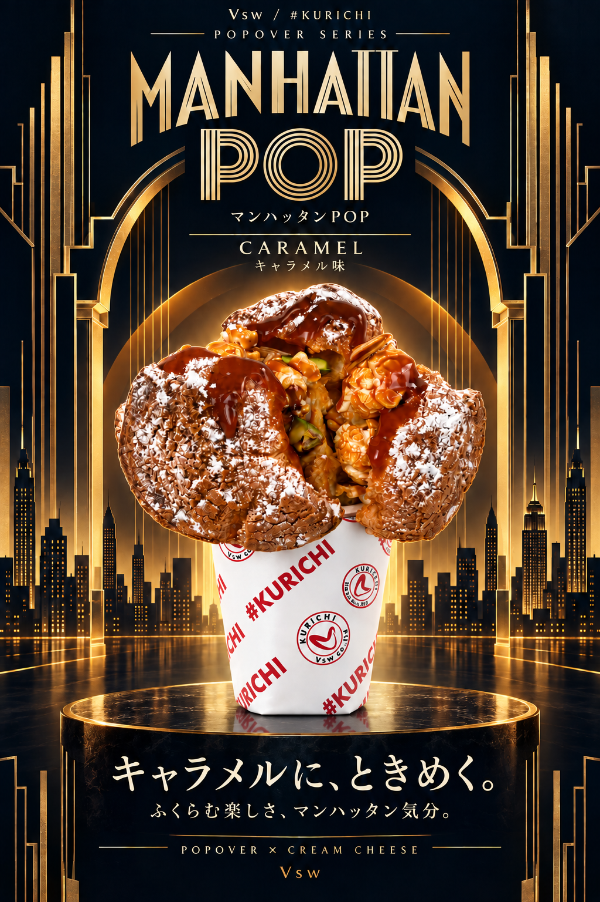

VSW / CREAM CHEESE & POPOVER
POPOVER
ふたつの街。ふたつの、ときめき。
ブルーベリーのブルックリン。キャラメルのマンハッタン。
気分で選ぶ、ふたつのPOP。
01 / BLUEBERRY
BROOKLYN
POP
Brooklyn Style
ブルックリンPOP / ブルーベリー味
ふくらむかたち。
自由なおいしさ。
焼きっぱなしだからこそ生まれる、自由なふくらみと個性的なフォルムの「POPOVER」。チョコをまとわせ、ザクザク食感のクランチをトッピング。
中にはクリームチーズを贅沢に使った、なめらかで濃厚な「#生クリチクリーム」とブルーベリー&クランベリーを果実感溢れるブルーベリーソースを絡めてサンド。
レアチーズ感とベリーの甘酸っぱさが重なる味わい。カタチも味も食感も自由。ブルックリンから着想した新感覚の#クリチです。

02 / CARAMEL
MANHATTAN
POP
マンハッタンPOP #クリチ キャラメル味
キャラメルに、
ときめく。
焼きっぱなしだからこそ生まれる、自由なふくらみと個性的なフォルムの「POPOVER」。
中にはクリームチーズを贅沢に使った、なめらかで濃厚な「#生クリチクリーム」とカスタードクリームを重ね、キャラメルソースをたっぷりと。さらにキャラメルポップコーンとナッツを合わせ、クリーミーなコクとキャラメルの甘さ、ナッツの香ばしさが重なる味わい。
カタチも味も食感も自由。マンハッタンの華やかで刺激的な空気感から着想した、新感覚の#クリチです。
A taste of city lights.
ふたつのPOPを見る ↓
POPOVER ◇ MANHATTAN POP ◇ CARAMEL
03 / TWO FLAVORS
あなたは、どちらのPOP？

{kind=link}
{kind=link}
{kind=link}
{kind=link}
04 / ABOUT VSW #KURICHI
価値をサンドする。
SandWich the Value
Vsw #クリチ
「価値をサンドする〜SandWich the Value〜」をコンセプトに、異なる価値を掛け合わせ、新しいおいしさを生み出すVsw。
フードブランド「#クリチ」では、生地×中身×アイデアを自由に組み合わせ、これまでにない食体験を提案します。
クラシックな定番から遊び心あふれる新作まで、“サンドする”ことで生まれる、新しい価値をお楽しみください。